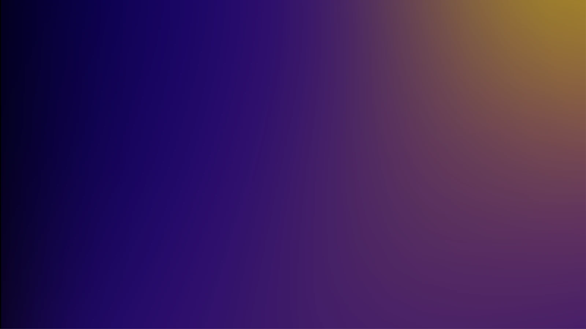

The ZHA UI gradient library
Gradients are decorative. The hero meshes and the spectrum are identity / hero only; the three washes are the only gradients safe on work surfaces. Never use gradients as a work-surface heading fill.
Source material - the graphic design team's gradient meshes
The hero meshes in the next section are CSS approximations of these four images, which the graphic design team keeps on the brand assets share under ZHA_Colour\ZHA_Gradients. Each original sits beside its CSS twin; the page shows a 1600 px copy of each 3991 x 2245 px file.

Hero meshes - marketing surfaces only · text via --text-*
Spectrum - oklch-vivid where supported, clean sRGB otherwise
Team signature wardrobe (ES) - identity / hero, live from the confirmed pair
Forever advancing
.accent-grad · flat sweep
.accent-grad-aurora · glow panel
.accent-grad-conic · angular sweep
.accent-grad-duo · plateaued blend
Signature-form pool - 16 entries, four families, un-assigned
Anyone may invoke an entry as decoration. At confirmation a team adopts an entry: its two anchor hues become the team pair (rendered live as --brand-grad and the wardrobe above) and its form becomes the team signature. Through-hues and hazes are decorative. ES’s confirmed teal → magenta is not in the pool.
J · journeys - travel through a third hue
.grad-pair-polar · purple → (ultramarine) → teal
.grad-pair-blaze · magenta → (orange) → yellow
.grad-pair-reef · teal → (dark green) → lime
.grad-pair-nova · ultramarine → (magenta) → apricot
.grad-pair-orchid · blue → (purple) → magenta
C · conics - off-centre angular sweeps
.grad-pair-beacon · teal ↔ ultramarine
.grad-pair-sundial · yellow ↔ cool red
.grad-pair-prism · purple ↔ cool red
.grad-pair-verdigris · dark green ↔ blue
A · auroras - layered glow over near-black (dark-first) · text via --text-* only
.grad-pair-borealis · ultramarine ↔ light green
.grad-pair-nebula · purple ↔ apricot
.grad-pair-abyss · blue ↔ dark green
.grad-pair-furnace · orange ↔ magenta
D · fields - plateaued soft blends
.grad-pair-signal · lime ⇢ ultramarine
.grad-pair-terra · dark green ⇢ (yellow) ⇢ apricot
.grad-pair-regatta · blue ⇢ orange ⇢ blue
Washes - safe on work surfaces